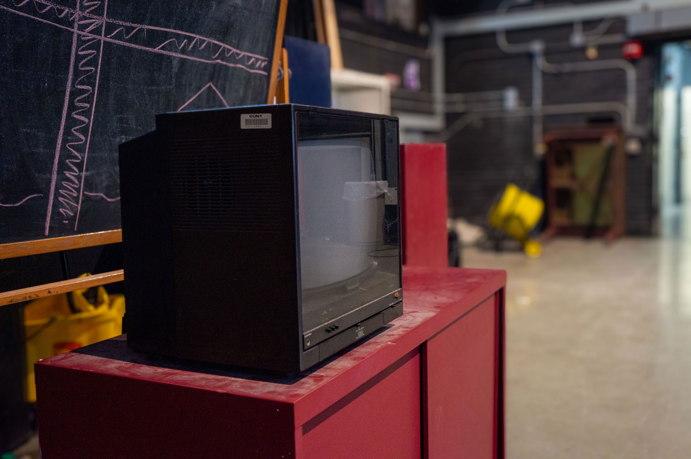

Depth of Field 1
Regarding the images selected for this assignment (and the prior one with the dressing dummy), we found the black box theater the first week we went out with the cameras and thought it would be a good location to get good depth of field shots given its size and the number of different objects there. The television stood out to me first for the retro vibe, the bright red cabinet it's sitting on, and the blackboard behind. It had the look already of the kind of image seen in analog horror shows/games, and it would be easy to imagine the screen turning on to display some grainy, artifact laden video.
The other item that caught my eye was the dressing dummy, both for its color as a cream/white against the largely dark and black items behind it, as well as for having a somewhat human element in a bunch of technology items.